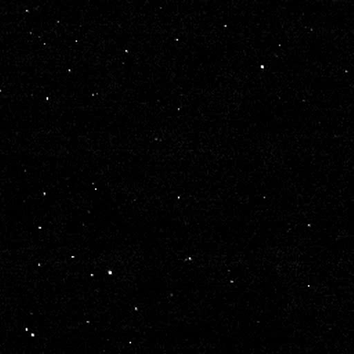

Arrokoth
486958 Arrokoth is a trans-Neptunian object in the Kuiper belt.
It was discovered during the New Horizons extended mission and is currently the most distant object visited by a spacecraft.
Arrokoth is a redddish contact binary made of ice and organic material.
The surface is lightly cratered, but somewhat diverse in features.
Arrokoth was first observed on 26 June 2014, by the New Horizons KBO Search team using the Hubble Space Telescope.
It was identified as a potential flyby target for NASA’s New Horizons spacecraft, which had already completed its primary mission to Pluto.
The other two potential targets were objects 2014 OS393 and 2014 PN70.
Arrokoth is the Powhatan word for "sky".
The name was chosen for its distant location in the sky.
Before that, it had the provisional 2014 MU69 and temporary label "Potential Target 1".
Later, it received the nickname "Ultima Thule" (Latin for "beyond Thule"), refering to the lands beyond the leegendary Greek northernmost location on Earth, or Hyperborea.
It was selected from an online poll.
The term also has an unfortunate modern meaning, refering to a mythological "Aryan homeland".
Arrokoth is a trans-Neptunian object, located in the Kuiper belt.
It is not resonant, making it a part of the classical population (cubewano).
The semi-major axis is 44.6 AU, the perihelion is 42.7 AU, and the aphelion is 46.4 AU.
It takes Arrokoth 297.7 years to complete one orbit.
The eccentricity is 0.04 and the inclination is 2.45°, making it a cold cubewano.
The rotational period of Arrokoth is 15.9 hours.

New Horizons leaving Arrokoth
Shape and size
Arrokoth is a contact binary, consisting of two planetesimal lobes connected by a narrow neck.
It has triaxial dimensions of 36 × 20 × 10 km, with a mean 18.3 km diameter
The two lobes - Wenu and Weeyo - are respectively 15.9 and 12.8 km in diameter.
To date, it is one of the smallest known TNOs.
Arrokoth formed early in the Solar System’s history, 4.6 billion years ago.
It was created through a gentle collision or gravitational merger of two separate bodies at low velocity.
The lack of significant heating or compression during formation has preserved Arrokoth’s original composition and structure.
The internal structure of Arrokoth is thought to be relatively homogeneous and porous.
It is composed of mostly amorphous water ice and rocky material, as well as trace amounts of methane and other volatile gases in the form of trapped vapors.
The neck connecting the two lobes is likely a region of greater porosity, possibly formed by the accumulation of material during the merger.
Spectroscopic observations revealed that Arrokoth’s surface is rich in organic materials, particularly tholins, which give the object its reddish color seen by New Horizons.
Methanol ice and other complex organic molecules have been detected, but no water ice.
The surface is notably uniform in color and composition, with no large-scale variations detected apart from several brighter spots.
The object’s surface is relatively smooth, with few impact craters, but still diverse.
The largest crater-like depressions are a few kilometers across, and there are no signs of large impact basins or extensive fracturing.
The smaller Weeyo Lobus has a relatively large crater, called Sky, while the larger Wenu Lobus is marked by a circular line, Ka'an Arcus.
The lobes themselves exhibit slight variations in brightness, possibly due to differences in surface texture or composition, but these spots are minor compared to the overall uniformity.
An example of these is the bright neck between the two lobes, named Akasa Linea, may be composed of finer-grained material or exposed ice.
There are also two bright spots in Sky crater, as well as some smaller ones on Wenu Lobus.
Other features are troughs that mark parts of the surface.
New Horizons performed a close flyby of Arrokoth on January 1, 2019, providing the first detailed images and data of a cold classical Kuiper Belt object.
It is the first object to be targeted for a flyby that was discovered after the launch of the spacecraft visiting it, and is the farthest object in the Solar System vited by a spacecraft.
The encounter revealed Arrokoth’s contact binary shape, surface properties, and composition.